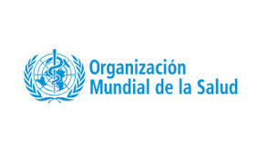
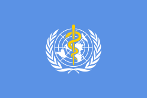

Dia mundial de la salud
Infografia
Informacion sobre el Dia mundial de la salud

Campaña del dia mundial de la salud. La Organización Mundial de la Salud se fundó sobre la base del principio de que todas las personas deberían poder hacer efectivo su derecho al grado máximo de salud que se pueda lograr.
Por lo tanto, la “Salud para todos” ha sido la visión que nos ha guiado a lo largo de más de siete decenios. También es el motor de la actual iniciativa impulsada a nivel de toda la Organización de ayudar a los países a avanzar hacia la cobertura sanitaria universal (CSU).
“Nadie debería tener que elegir entre la muerte y las dificultades económicas. Nadie debería tener que elegir entre comprar medicamentos y comprar alimentos”. -Dr. Tedros Adhanom Ghebreyesus, Director General de la OMS
Durante esta aplicacion, se abarcaran los siguentes temas:
- ¿Cuando se celebra y por que?
- ¿Que se trata de conseguir con la campaña?
- ¿Que hace la OMS?
- Cobertura sanitaria universal
- ¿Que es lo que no incluye la Cobertura sanitaria universal?

